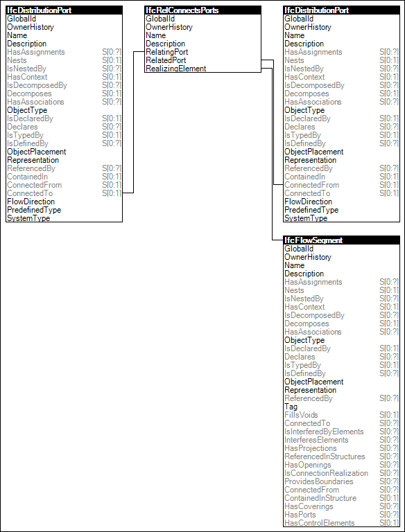

Link to this page
Link to this pagePorts on distribution elements, such as ducts and airoutlets, or pipes and sanitary elements are connected with each other using the Port Connectivity. The port connection determines the direction of flow between the connected ports belonging to the distribution elements.
Figure 52 illustrates an instance diagram.
 |
Figure 52 — Port Connectivity |